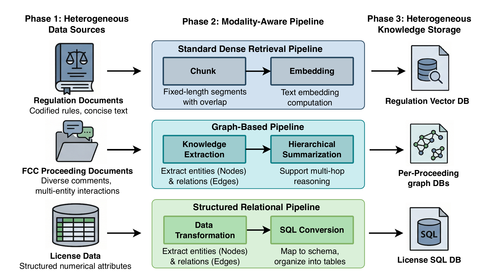
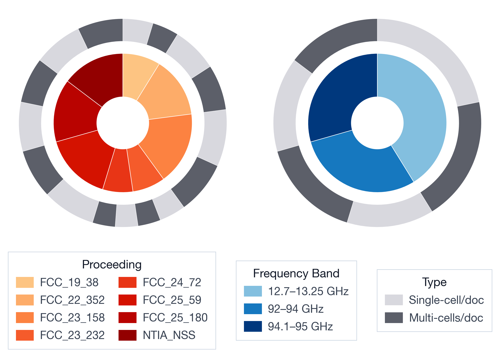
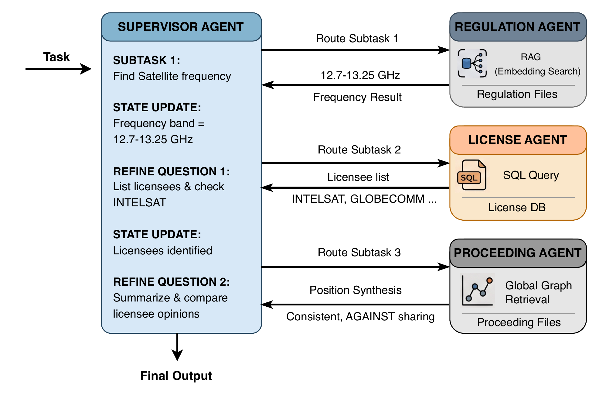
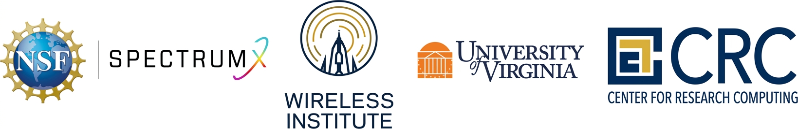

The exponential growth of wireless devices is driving unprecedented spectrum demand, pushing spectrum management toward more fine-grained decisions across space, time, and device constraints. As a result, spectrum policymakers and engineers must process large volumes of data that come from diverse sources and take many different forms, such as text and tables. These data sources are often disaggregated and require significant time and effort to integrate, search, and interpret. Furthermore, most of this information is formatted for human understanding and is not readily accessible to automated systems.
To address this challenge, we propose SpecMind, a novel Multi-Agent Retrieval-Augmented Generation (RAG) system for spectrum intelligence that performs reasoning over heterogeneous data sources. This system enables autonomous agents to coordinate specialized sub-agents that retrieve and synthesize knowledge across policy proceedings, legal regulations, and license databases. We develop SpecBench, a question and answer (Q&A) dataset based on real-world license records and policy proceedings, addressing the lack of evaluation resources for RAG systems in the spectrum domain.
Experimental results demonstrate that SpecMind outperforms traditional, general-purposed RAG systems across spectrum-related tasks, achieving over 80% win rate against strong baselines. The agent-based design enables more accurate retrieval, better contextual reasoning, and improved task completion across diverse query types.
Spectrum data come in fundamentally different shapes: license records are structured tables dominated by numerical fields, FCC proceedings are large collections of comments with complex multi-entity interactions, and regulatory texts are concise, legally precise documents. Instead of forcing all of them through a single semantic retrieval pipeline, SpecMind builds a modality-aware database for each source: license data are organized into a relational SQL database queried via text-to-SQL, proceedings are modeled as entity-relation graphs with hierarchical summaries (GraphRAG), and regulations are indexed with dense embeddings plus reranking.

Database construction pipeline for heterogeneous spectrum data.
A Supervisor Agent follows a structured Think–Act–Observe loop: it decomposes each query into subtasks, decides whether to invoke a specialized agent or perform an internal operation, and iteratively updates a global task state until a final answer is produced. Three specialized agents handle the heterogeneous sources: the License Agent inspects database schemas and issues validated SQL queries, the Proceeding Agent selects the relevant proceeding and dynamically chooses among basic, local, and global graph retrieval, and the Regulation Agent runs a high-precision retrieve-and-rerank pipeline over regulatory texts.
SpecBench is an expert-designed benchmark of 450 curated question–answer pairs built on real-world FCC license records, proceedings, and regulations. Question types were identified through interviews with domain experts and cover proceeding (31.1%), license (31.1%), regulation (13.3%), compound (14.4%), and unanswerable (10.0%) queries, evaluating three core RAG capabilities: noise robustness, information integration, and negative rejection.

Distribution of questions in SpecBench. The inner ring shows the proportion of questions across different sources; the outer ring distinguishes single-source and multi-source questions.
SpecMind consistently outperforms Web-search RAG and SpectrumRAG across all question types and both backbone LLMs, reaching an 81.1% overall win rate and a 99.6% success rate with GPT-5.2. The gains are largest on license and compound queries, where SQL-based retrieval and cross-agent coordination matter most.
| Model | Method | Proceeding | License | Regulation | Compound | Overall | |||||
|---|---|---|---|---|---|---|---|---|---|---|---|
| Win | Success | Win | Success | Win | Success | Win | Success | Win | Success | ||
| Qwen3-8B | Web-search RAG | 2.9 | 70.2 | 0.0 | 15.5 | 29.7 | 88.3 | 4.8 | 9.2 | 5.4 | 37.8 |
| SpectrumRAG | 12.5 | 71.5 | 0.8 | 6.7 | 6.7 | 52.4 | 0.0 | 0.0 | 6.1 | 42.6 | |
| SpecMind (ours) | 60.4 | 91.8 | 79.3 | 87.9 | 42.0 | 96.7 | 70.5 | 81.7 | 66.2 | 89.8 | |
| GPT-5.2 | Web-search RAG | 4.7 | 78.3 | 0.0 | 25.3 | 38.3 | 95.8 | 8.3 | 13.3 | 7.9 | 50.5 |
| SpectrumRAG | 18.8 | 78.8 | 1.2 | 8.2 | 8.3 | 60.6 | 0.0 | 0.0 | 8.5 | 56.5 | |
| SpecMind (ours) | 72.9 | 100 | 97.6 | 100 | 51.7 | 100 | 86.8 | 96.7 | 81.1 | 99.6 | |
Win rate and success rate (%) across question types under different backbone LLMs. All methods score 100% success on unanswerable questions (omitted for brevity).
Ablation studies confirm that every specialized agent matters: replacing the License Agent with naive RAG drops the license win rate by 87.8 points, and removing the Proceeding Agent costs 27.3 points on proceeding questions, reflecting the importance of structured and graph-based retrieval where semantic matching falls short.
Consider the query: “Within the 12.7–13.25 GHz band, which frequencies are allocated to satellite services? Is Intelsat an incumbent in this band, and if so, do Intelsat and other incumbents share the same position on spectrum sharing with terrestrial services?” The supervisor first asks the Regulation Agent to identify the relevant band, then invokes the License Agent to retrieve the corresponding licensees via SQL, and finally uses the Proceeding Agent's graph retrieval to compare incumbents' positions on spectrum sharing — resolving inter-step dependencies through the shared task state.

Case study of SpecMind on a representative compound query.
@inproceedings{dong2026specmind,
author = {Dong, Songwei and Lu, Bingyan and Kienlen, Makayla and Laneman, J. Nicholas and Shen, Cong},
title = {{SpecMind}: Enabling Spectrum Intelligence via Multi-Agent Hybrid Retrieval-Augmented Generation},
booktitle = {IEEE Global Communications Conference (GLOBECOM)},
year = {2026},
}This work was supported in part by SpectrumX, the National Science Foundation (NSF) Spectrum Innovation Center, operated under Cooperative Agreement by the University of Notre Dame. The project was conceived during a SpectrumX center meeting and subsequently received a seed fund to carry out the research; we thank NSF and SpectrumX for the support.
The authors would like to thank Zhiyu Shen, Yuxi Chen, Omkar Mujumdar, Yankai Peng, Hasan Nazim Bicer, Christopher Wahl, Solbee Kang, and Lucas Scholler in the Notre Dame Wireless Institute for their valuable contributions to data collection and the evaluation process. In addition, we thank Caleb Reinking, Le Li Kruczek, Connor Howington, and Paul Brenner in the Notre Dame Center for Research Computing for their contributions to code optimization and the implementation of the system user interface.
